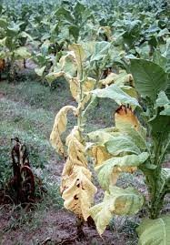
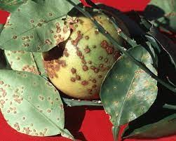
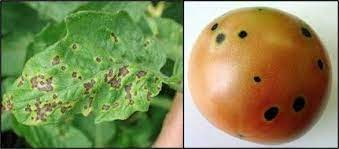
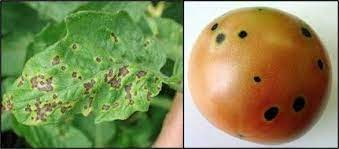

MANAGEMENT
• Warm and wet pathogen: June –July
• Use disease free seed and transplants
• Avoid injury to the plant
• Limit leaf wetness by watering through the drip
• Remove or destroy debris after harvest
• Spray chlorothalonil (2g/l) or mancozeb(2g/l) or
propineb(2g/l) or copper hydroxide (2g/l) or metiram
(2g/l) at fortnight intervals
• Treat the seed with seed pro

MANAGEMENT
* Copper hydoxide 2g/l* Iprodione + Carbendazim 2g/l
* Mancozb-carbendazim 2g/l

MANAGEMENT
• Cultural practices• Crop rotation, removal of infected plant debris and alternate
• hosts, deep ploughing, increasing air movement inside the
• canopy, reducing nitrogen fertiliser
Chemical management
• Qo inhibitors - Azoxystrobin and kresoxim-methyl (1ml/l)• Triazole - bitertanol (1g/l), myclobutanil (1g/l), Difenconazole (0.5ml/l),
penconazole (0.6ml/l), propiconazole (1ml/l),
flusilozole (0.3ml/l) and triadimefon (1g/l)
• Morpholine - Tridemorph (1ml/l)
• Contact - Sulphur

MANAGEMENT
• Destroy cull piles and weed hosts.• Plant disease-free tomato transplants
• Cholorothalonil(2g/l)/ mancozeb (2g/l)/ Copper hydroxide(2g/l)
• Bordeaux mixture (1%)
• Metalxyl-mancozeb (2g/lit)
• Dimethomorph (1g/lit)-mancozeb (2.5g/l)
• Fenamidone-mancozeb(3g/lit)
• Metiram-pyroclostrobin(3g/l)
• Famoxadone-cymoxanil(1ml/l)
• Iprovalicarb-propineb (4g/l)
• Krexim –methyl (1ml/l)
Bacterial Diseases
 
 

MANAGEMENT
Crop rotation with maize-sorghum-ragi or maize-onion or garlic and rice•Seed treatment with seed pro10g/kg seeds before sowing.
•Seedling root dip with seed pro 10g/l and planting in green manure (Sannhemp) amended soil
•Foliar application/root drenching with Copper hydroxide (2g/l)
viral diseases


MANAGEMENT
• Avoiding exporting or importing of viral disease plant materialsto disease free localities through quarantine law certification and inspection. • Selection of viral disease-free seeds from the disease-free regions.
• Selection of viral disease-free planting materials like Cutting, bull, rhizomes, tubers etc.
Nursery Stage
• Soaking of seed in Trisodium citrate solution ( 3-5g per liter) for 15 to 20 min and
• drying
• Growing of nursery under Nylon net cover (60-80) mesh
• Soil Application Furadon @ 1.0 Kg ai / ha at the time of sowing seeds in the • nursery bed
• Prior to transplantation the seedlings should be sprayed with Dimethoate @ 2.0
• ml per liter or Monocrotophos @ 1.5ml per liter or Acephate 1.5 g/liter.
• Seedling dip in 0.5 ml/L Imidacloprid
Integrated Management of viruses –Main field
• Sowing of border crops like Maize, Bajra / Jowar 15 days beforethe
• transplanting of Chilli
• Removal of early infected plants from the field
• Spraying of Acephate @ 1.5g per liter (or) Hostothion @ 1.0 ml perliter
• (or) Imdacloprid @ 0.5ml per liter (or) Regent @ 1.0 ml/liter at 7 to 10
• days interval, 15 days after transplanting until fruit formation
• Spraying of Neem seed Kernel extract 2% + sticker 10 days interval 15
• days after trans planting until fruit formation
• Mulching with silver or black polythene color mulch sheet